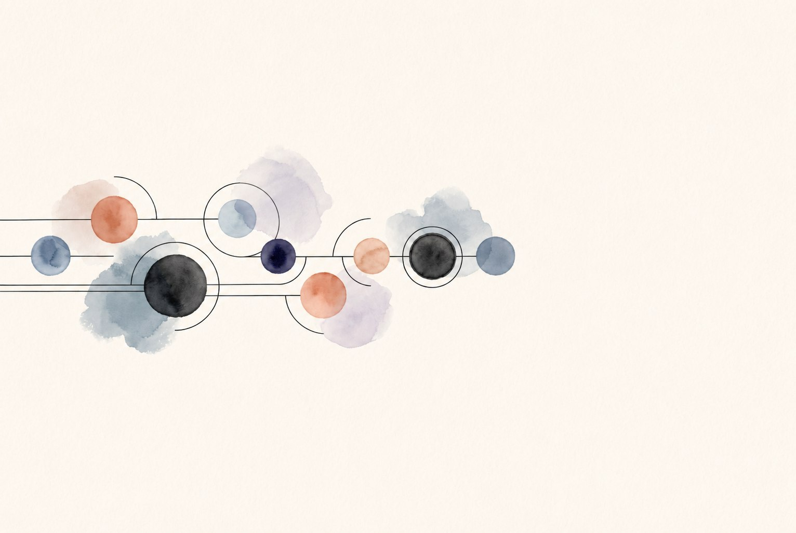
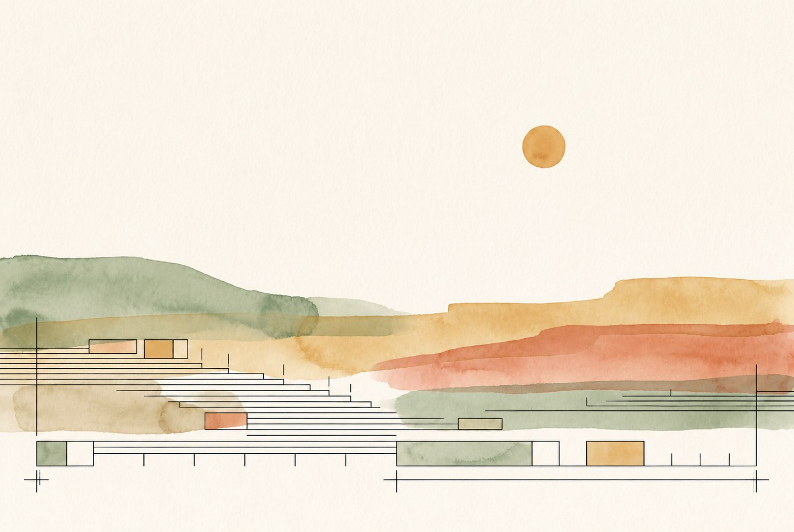
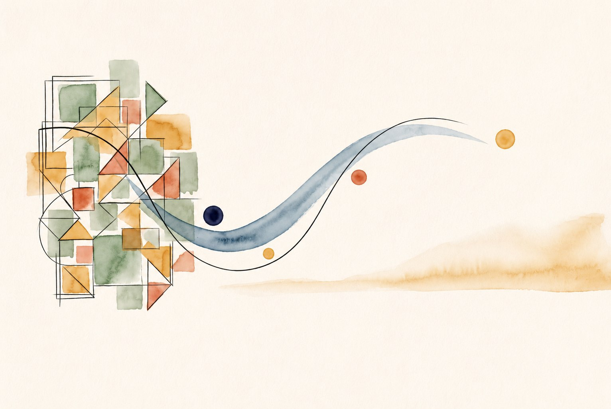
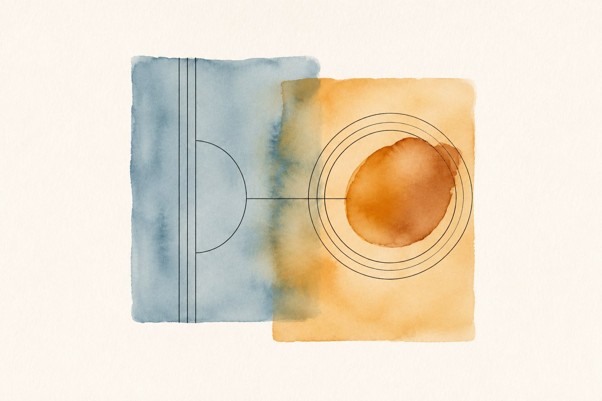
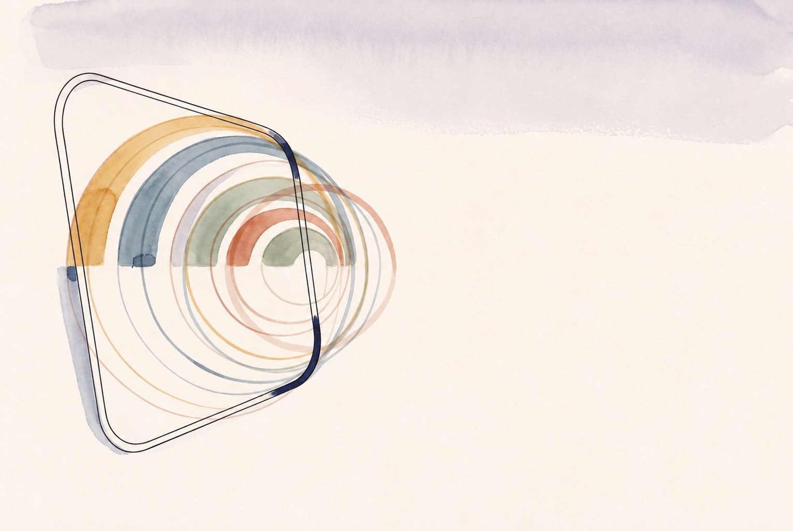

Who Gets to Define Taste?
A beer book, a mango, a jaggery sold like a wine, and the question of why India's depth so rarely gets written down for strangers.
India, culture and the world · ०१
written down ↙
A beer book, a mango, a jaggery sold like a wine, and the question of why India's depth so rarely gets written down for strangers.

Releases, discovery, and the road out.

The Indian indie ecosystem: who does what, what it costs, and what keeps an artist going.

Audience, visual language, and the life that forms around the songs. Eight artists, three questions.

Voice, instinct, and what's already there. Ten artists, two questions.

A cultural anthropology of popular music, 1950s to today.
Nothing here yet under that combination.